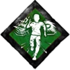
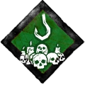

Меню
по убийцам
Призрак
Деревенщина
Медсестра
Тень
Ведьма
Доктор
Охотница
Каннибал
Кошмар
Свинья
Клоун
Дух Рин
Легион
Чума
Гоуст Фейс
Демогоргон
Они
Стрелок
Палач
Мор
Близнецы
Трюкач
Немезис
Сенобит
Художница
Онрё
Грязь
Default skill
Навыки в игре упрощают её,и дают преимещуство,всего в игре 97 навыков для убийцы,каждый навык даёт преимущество в своей сфере.
Камьюнити игры придумало так званые билды,
билды - это сборка навыков.
Всего слотов для навыков 4,первый слот открыт изначально,остальные три открываються по прокачке персонажа.
5 уровень - II слот
10 уровень - III слот
15 уровень - IV слот
Т.к. есть ограничение на слоты = 4.По этому навыки нужно выбирать полезные и нужные,из-за этого камьюнити игры
придумало билды.На каждого убийцу свой билд,зачастую билд будет упрощать игру за убийцу / выжевшего.
А так же навыки имеют уровни:
I Уровень (жёлтый)
II Уровень (Зелёный)
III Уровень (Фиолетовый)
с первого уровня навык будет очень слаб,но докачав его до III навык становится в разы сильнее и снова же он упрощает вам игру за того или иного персонажа.
Следующая часть страницы будет посвященна экслюзивным навыкам,которые можно получить покупкой персонажа / купить
в храме тайн.
Меню
по убийцам
| Охотник | ||
|
Вы возбуждены от желания поскорее повесить вашу добычу. |
С такой великой силой вам не страшна никакая преграда. Теперь вы ломаете опрокинутые доски, разрушаемые стены и генераторы на {процентов} быстрее. |
Одно ваше присутствие вселяет страх. У выживших, находящихся в пределах вашего радиуса террора, на 10% чаще срабатывает проверка реакции при починке или лечении. Зона успеха при проверке реакции уменьшается на {процентов}. |
| Призрак | ||
|
Вы хорошо видите во мраке ночи. Угол вашего обзора увеличен на {градусов}. Не суммируется с другими бонусами к углу обзора. |
Подобно гончей, вы чуете кровь издалека. Свежие следы крови значительно заметнее, чем обычно, и отслеживаются на {секунд} дольше. |
Ваш талант следопыта позволяет тщательнее исследовать следы, которые оставляют за собой бегущие выжившие. Следы-трещины, оставленные Выжившими, будут появляться {по разному} ближе и плотнее друг к другу. |
| Деревенщина | ||
|
Вы не чувствуете боль. Длительность оглушения досками снижена на {процентов}. |
В отличие от других тварей из Тумана, вы приспособились к свету. Вы обрели иммунитет к ослеплению фонариками и хлопушками. Ауры выживших, которые пытаются вас ослепить, подсвечиваются вам на {секунд}. |
Когда ремонт генератора доходит до 70%, вы слышите громкий звук и получаете эффект "Незаметность" на {секунд}. |
| Медсестра | ||
|
Вы крайне чувствительны к дыханию своей жертвы. Дыхание выживших, страдающих от боли, звучит на {процентов} громче, обычное дыхание громче на {процентов}. |
Их храбрость тает перед лицом неизбежной смерти. За каждого раненного, умирающего или повешенного на крюк выжившего скорость поломки, починки и очистки тотемов у остальных снижается на {процентов}. Максимальный штраф - {процентов}. |
У Вас появляется способность чтения ауры. Ауры выживших - лечащих или лечащихся, раскрываются вам, когда они находятся в радиусе {метров} от вас. |
| Тень | ||
|
Вы становитесь одержимы одним Выжившим. За каждый успешный удар базовой атакой НЕ по объекту одержимости вы получаете один жетон. |
Вы становитесь одержимы одним выжившим. Объект вашей одержимости получает бонус к скорости действий 33% при снятии с крюка и лечении других выживших. |
Вы становитесь одержимы одним выжившим. Каждый раз, когда вы преследуете и упускаете объект одержимости, вы получаете 1 жетон (вплоть до 3). Каждый жетон повышает вашу скорость передвижения на {процентов}. Каждая базовая или особая атака тратит один жетон. |
| Ведьма(Хага) | ||
|
"Порча: Погибель" воздействует на все генераторы. Когда выживший прекращает чинить генератор, прогресс тут же автоматически начинает снижаться со скоростью, составляющей {процентов} от обычной. |
Порча, черпающая силу в надежде. Ложная надежда выживших лишь усиливает ваш голод. Когда выживший спасён с крюка хотя бы в 24 метрах от вас, навык "Пожирание надежды" получает жетон. |
Порча, препятствующая чтению ауры. При активном тотеме порчи удар по выжившему базовой атакой или особой атакой вызывает эффект "Слепота" |
| Доктор | ||
|
Щепетильный в своих методах и грозный в своем обличии. Во время погони ваш радиус террора увеличивается на 8 метров. В обычном состоянии ваш радиус террора уменьшается на 8 м, а угол обзора увеличивается на {градусов} Эффекты увеличения угла обзора не суммируются. |
Вас переполняет ненависть к прогрессу. Вы можете перегрузить генератор, совершив действие "Поломка генератора". Выживший, который попытается взаимодействовать с этим генератором, столкнется с чрезвычайно тяжелой проверкой реакции. При провале этой проверки починка откатывается еще на {процентов}. Успешная проверка не увеличивает прогресс починки, но защищает от взрыва. |
Одно ваше присутствие вселяет страх. Выжившие, находящиеся в вашем радиусе террора, становятся менее способными. У этих выживших возрастает скорость траты предметов на {процентов}. |
| Охотница | ||
|
У вас появляется способность чтения ауры. Ауры выживших раскрываются вам на 3 секунды, когда те спускаются в подвал, а вы находитесь более чем в 32-х метрах от него. Территориальный Императив может сработать лишь раз в {секунд} |
Порча, черпающая свою силу из отчаяния. Вы напеваете навязчивую мелодию ужаса, которая путает мысли жертвы. Выжившие получают штраф {процентов} к прогрессу при лечении или починке, если проваливают проверку реакции. Каждый раз, когда выживший попадает на крюк, сила "Колыбельной Охотницы" возрастает. Это сказывается на предупреждении о проверках реакции при лечении и починке: |
Ваша жажда убийства столь сильна, что на короткое время затмевает даже связь с Сущностью, и ваши действия становятся совершенно непредсказуемыми. Когда вы получаете 1-й уровень кровожадности, на вас начинает действовать эффект "Незаметность". Эффект пропадает, когда вы теряете кровожадность. |
| Каннибал | ||
|
Тесная связь с Сущностью дарует вам способность чтения аур. После того, как вы вешаете выжившего на крюк, ауры остальных выживших открываются вам на 4 сек., если они находятся более чем в {метров} от крюка. |
Ваши атаки столь яростны, что попавшие под удар выжившие роняют предметы. Если выпавший предмет не успеют подобрать в течение {секунд}, Сущность его поглотит. Ауры выпавших предметов в радиусе 32 м подсвечиваются белым. Ауры предметов постепенно краснеют, пока их не поглотит Сущность. |
Травмы, нанесенные вашими жестокими ударами, не позволяют выжившим звать на помощь. Ауры умирающих выживших, которых вы сразили базовыми атаками, не видны их союзникам, пока те находятся более чем в {метрах} от них. Умирающие выжившие, которых вы сразили базовыми атаками, ползают на 50% медленнее в течение 15 сек., а их скорость восстановления снижается на 25%. В это время на выживших действует эффект "Слепота". |
| Коwмар(Фреди Крюгер) | ||
|
Страх потерять своих жертв наполняет вас злобой и заставляет продолжать охоту. Каждый раз, после того как выживший восстанавливает генератор, пламя мести разгорается сильнее. За каждый отремонтированный генератор вы получаете +{процентов} (бонус суммируется) к скорости следующих действий до конца матча: поднятие/бросание, преодоление препятствий, поломки генераторов и досок. |
Вы становитесь одержимы одним выжившим. Каждый раз, когда объект одержимости теряет уровень здоровья, время, необходимое для открытия ворот, увеличивается на 4 сек., вплоть до {секунд} максимум. Навык "Помни Меня" не влияет на объект одержимости. Одновременно убийца может быть одержим только одной жертвой. |
Как только открываются Ворота, навык Кровавый Смотритель станет активным. Вы будете видеть ауры Выживших, которые находятся рядом с выходом. Раз в матч, когда хотя бы одни Ворота открыты, повесив Выжившего на крюк, вы призываете Сущность заблокировать все выходы для Выживших на {секунд} |
| Cвинка | ||
|
Когда выживший спасает своего союзника с крюка на расстоянии хотя бы 32 м от вас, срабатывает "Выбор За Тобой": спасатель вскрикивает, и на него накладывается эффект "Уязвимость" на {секунд}. "Выбор За Тобой" может снова сработать через 60 сек. |
У вас появляется способность чтения ауры. Любой сломанный генератор подсвечивается белым. Если поломка исправлена, генератор подсвечивается желтым на {секунд}. Шум от ремонта генераторов слышен на большем расстоянии (+8м). |
Благодаря хитроумным усовершенствованиям крюков вы узнаете, если кто-то пытается их повредить. Вы получаете уведомление, когда выживший начинает ломать крюк Когда вы несете выжившего, вам будет показана аура любого выжившего в радиусе {метров} от крюка. |
| Клоун | ||
|
Глубокая связь с Сущностью дарит вам силу. После того, как вы повесили выжившего, следующий сломанный вами генератор сразу лишится 20% текущего прогресса. После повреждения генератора прогресс будет уменьшаться с обычной скоростью. "Чертик из табакерки" действует в течение {секунд} после подвешивания выжившего. |
Вы приводите в ужас даже тех, кто обычно не боится клоунов. В радиусе вашего террора выжившие лечатся на {процентов} медленнее, а проверка реакции во время лечения происходит на 50% быстрее. |
Вы перелезаете через препятствия на {процентов} быстрее. После преодоления препятствия Сущность заблокирует его на {секунд}. Навык может заблокировать только одно препятствие за раз. Препятствие заблокировано только для Выживших. Не действует на доски. |
| Дух Рин | ||
|
Вы становитесь одержимы одним Выжившим. Каждый раз после полной починки генератора ваша Одержимость видит вас на протяжении {секунд}. Каждый раз после полной починки генератора ауры всех Выживших раскрываются вам на 3 секунды. Как только все генераторы заведены, Одержимость начинает страдать от эффекта Уязвимость и вы можете убить ее своими руками. |
В матче появятся два проклятых тотема. Когда выживший очищает любой из проклятых тотемов, все выжившие начинают страдать от эффекта "Уязвимость" в течение {секунд}. Другой проклятый тотем сразу становится пустышкой. |
Каждая сломанная доска приумножает ярость Сущности. После поломки {кол-ва} досок, в следующий раз, когда вы будете оглушены доской, Сущность моментально сломает ее. При этом вы все равно пострадаете от оглушения. |
| Легион | ||
|
Любой генератор в радиусе {метров}, который чинят два или более выживших, будет подсвечен желтой аурой. При первом подсвечивании "Разлад" вызывает громкий звук, указывающий на генератор. Если генератор оказывается вне радиуса действия или уже не чинится двумя или более выжившими, аура остается еще на 4 сек. |
Вы открываете шкафчики на {процентов} быстрее. Вылезающие из шкафчиков выжившие получают эффект "Уязвимость" на 30 сек. и раскрывают свое местоположение на 4 сек. |
Когда вы несете выжившего, удары мимо цели не требуют перезарядки. После успешного попадания базовой атакой по другому выжившему уже пойманный не сможет вырываться {секунд}. |
| Чума | ||
|
Демонстрация вашей силы вызывает приступ паники, которая охватывает всех вокруг. Вы становитесь одержимы одним выжившим. Когда объект одержимости теряет уровень здоровья, ваш радиус террора передается ему на {секунд} и распространяется на 32 м. В течение этого времени на вас действует эффект "Незаметность". Выживший, которому передан радиус террора, считается находящимся в пределах радиуса террора убийцы. Одновременно убийца может быть одержим только одной жертвой. |
Ваши молитвы пробуждают темную силу, которая мешает выжившим. В начале испытания Сущность блокирует генераторы (3), которые находятся от вас дальше всего, на {секунд}. На протяжении этого времени выжившие не могут их чинить. Такие генераторы подсвечиваются белым. Когда любой выживший переходит в предсмертное состояние, "Вмешательство скверны" прекращается. |
От криков неверных ваше сердце бьется чаще. Когда кто-нибудь из выживших оказывается в предсмертном состоянии, все выжившие в радиусе вашего террора кричат и выдают себя на {секунд}. |
| Гоуст Фейс | ||
|
Вы становитесь одержимы одним выжившим. Вы прячетесь в тенях, уничтожая жертв одну за другой. Когда объект вашей одержимости оказывается на крюке, "Скрытая погоня" получает жетон, но не более {штук}. Во время погони каждый жетон сокращает ваш радиус террора на 4 м. Если выживший снимает объект вашей одержимости с крюка, вы становитесь одержимы спасателем. Одновременно убийца может быть одержим только одним выжившим. |
Ваши органы чувств обострились в темных владениях Сущности. Разблокирует возможности чтения ауры. Вы увидите ауру любого выжившего, совершающего резкие действия на расстоянии 48 м от вас. Действует 6 сек. "Чуткий слух" срабатывает только раз в {секунд}. |
Ваши темные помыслы, собранность и хладнокровие будоражат Сущность. Когда вы подбираете выжившего, Сущность блокирует все генераторы, которые в данный момент не чинят выжившие, и в течение 16 сек. их нельзя будет ремонтировать. Такие генераторы подсвечиваются белым. "Пугающая тряска" срабатывает только раз в {секунд}. |
| Демогоргон | ||
|
Ваша связь с иным миром проявляется, когда жертва пытается сбежать. После каждого завершения ремонта генератора все окна и места для прыжков в радиусе 32 м от исправного генератора блокируются для всех выживших на {секунд}. Во время действия навыка вы видите ауру мест для прыжков, заблокированных "Клаустрофобией". |
Ваша пугающая близость ослабляет жертву и лишает ее сил. Во время починки генераторов на выживших действуют эффекты "Слепота" и "Усталость". Все текущие таймеры усталости замедляются на время починки генератора. Завершив действие починки, выживший снова слепнет и устает на {секунд}. |
В вашем ужасающем присутствии воздух электризуется, а техника начинает сходить с ума. Если вы доводите выжившего до предсмертного состояния базовой атакой, все генераторы в радиусе 32 м тут же взрываются и начинают портиться. Генераторы, на которые подействовал "Разряд", сразу потеряют {процентов} прогресса их починки. |
| Они | ||
|
У вас появляется способность чтения ауры. Вы в курсе того, где расположены важные для выживания объекты. Вы видите ауры досок, разрушаемых стен и мест совершения прыжков в радиусе {метров} от себя. |
Боль одного передается и другим. Когда выживший попадает на крюк, все остальные раненые выжившие получают кровотечение и усталость на 45 сек. Время восстановления "Отзвука крови" — {секунд}. |
Вы стремитесь покарать тех, кто вам навредил. Если выживший ослепляет вас или оглушает с помощью доски и шкафчика, он становится объектом вашей одержимости. Становясь объектом одержимости, любой выживший получает статус "Забывчивость" на {секунд}. Вы видите его ауру в течение 4 сек. |
| Стрелок | ||
|
Порча, возникающая из-за разрушения. Кара настигнет тех, кто посмеет перейти вам дорогу. На любого выжившего, взаимодействующего с тусклым или проклятым тотемом, будет наложен эффект "Забывчивость" на {секунд}. При уничтожении любого проклятого тотема, в том числе этого, вам будут подсвечены ауры всех выживших на 15 сек. |
Когда вы вешаете выжившего на крюк, навык "Аварийная кнопка" активируется на следующие {секунд}. Когда навык активен, Сущность заблокирует генератор на время действия "Аварийной кнопки", если выживший бросит его, не дочинив. Заблокированные генераторы подсвечиваются белым. |
Вы знаете, как звучат хорошо смазанные механизмы. Когда выживший теряет уровень здоровья, активируется навык "Знаток техники". Пока "Знаток техники" активен, каждый раз, когда кто-то из выживших отлично проходит проверку реакции при починке, его аура становится видимой на {секунд}. |
| Палач | ||
|
Вы направляете жертв по пути боли и наказания. Сломав генератор, вы получаете эффект "Незаметность", пока прогресс починки генератора не прекратит снижаться, или пока кто-то из выживших не окажется ранен или при смерти. В это время аура генератора подсвечивается для выживших желтым. Эффект может сработать только один раз в {секунд}. |
Те, кто смеют мешать вашему делу, будут сурово наказаны. Если выживший принимает удар на себя, на него накладывается эффект "Ослабление" на {секунд}. |
Те, чьи жизни связаны с тьмой, обречены страдать вместе. Когда выживший восстанавливает другому выжившему состояние здоровья в 32 м от убийцы и более, совершивший лечение закричит, выдавая свое расположение. При этом активируется "Смертельные узы" на 60 сек. В это время на выжившего будет действовать эффект "Забывчивость", если он отойдет от вылеченного товарища более чем на {метров}. |
| Мор | ||
|
Эта порча вызывает благосклонность Сущности при пролитии крови. После ранения выжившего Сущность удерживает на месте доски в радиусе 32 м от выжившего в течение 15 сек. Эти доски нельзя опрокинуть. Порча действует, пока не уничтожен соответствующий тотем. |
Пока "Порча: Не-смерть" действует, открываются ауры выживших в радиусе {метров} от любого тусклого тотема. Когда идет очистка другого проклятого тотема, порча с этого тотема (вместе с ее жетонами) переносится на тотем "Порча: Не-смерть" с прекращением действия эффекта "Порча: Не-смерть". |
Первый выживший, который будет взаимодействовать с генератором в течение 30 сек. после его поломки, закричит, выдав свое расположение на 4 сек., а также получит эффект "Уязвимость" на 60 сек. Время перезарядки "Драконьей хватки": {секунд}. |
| Близнецы | ||
|
Когда конец близок, вы наносите смертельный удар. Каждый законченный ремонт генератора повышает силу "Добивания". Вы получаете жетон. Использование одного жетона позволяет увеличить расстояние следующей атаки с выпадом на {процентов}. |
Вещей у вас немного, но они только ваши. Никому не позволено их трогать. Вы получаете громкое звуковое уведомление, когда выживший возится с сундуком или подбирает предмет в {метрах} от вас. В начале матча на карте будет до 2 дополнительных сундуков. Редкость предметов во всех сундуках снижена. |
Жизнь была к вам жестока, и теперь вы не намерены облегчать ее другим. Когда вы повреждаете генератор, до 3 случайных генераторов также начинают ломаться. Если один из этих генераторов чинят, запускается сложная проверка реакции для всех выживших, участвующих в ремонте. Использовать "Притеснение" можно каждые {секунд}. |
| Трюкач | ||
|
Все покорены вашим непревзойденным артистизмом. Когда вы несете выжившего, на всех других выживших в вашем радиусе террора действует эффект "Уязвимость". Он действует {секунд} на выживших, которые покинут ваш радиус террора, а также на тех, кто находится в радиусе, когда вы подвешиваете схваченного выжившего на крюк или выпускаете его. "Фанатение" перезаряжается в течение 60 сек., как только вы выпускаете выжившего из рук. |
Порча для надлежащего управления стадом из низших существ. Сущность на {секунд} блокирует оконный проем после того, как через него быстро перепрыгивает выживший. Порча действует, пока не уничтожен соответствующий тотем. |
Вы не пустите в VIP-зал абы кого... и не выпустите. После первого подвешивания выжившего на крюк, "Выхода нет" получает жетон. Когда будет починен последний генератор, Сущность заблокирует оба переключателя ворот на 12 сек., а также на дополнительные {секунд} за каждый полученный вами жетон. |
| Немезис | ||
|
Паразит NE-α наделяет вас интеллектом и сознанием, нужным для установки ловушки. После повреждения генератора его аура подсвечивается желтым. Когда выживший оказывается при смерти, каждый затронутый генератор взрывается, теряя 10% прогресса починки, а его состояние начинает ухудшаться Любой выживший, занимающийся починкой генератора, при его взрыве закричит и получит эффект "Обездвиживание" на {секунд} "Подрыв" перезаряжается 30 сек. |
Вы способны изувечить одного члена команды, чтобы вызвать панику у остальных. Когда здоровый выживший получает ранение, все раненые выжившие получают эффект "Забывчивость" на {секунд}. "Истерия" может срабатывать только раз в 30 сек. |

Вас создали для выслеживания и устранения целей. В начале матча вы видите ауры всех выживших в течение {секунд} Когда аура выжившего проявляется на определенное время, оно увеличивается на 2 сек. |
| Cенобит | ||
|
Вы причиняете мучения разуму, сокрушая все надежды на бегство. При полной починке генератора Сущность блокирует генератор с наибольшим прогрессом на {секунд}. Вы видите белую ауру в течение этого времени. |
Порча, которая играется с муками своей жертвы. Когда вы в первый раз вешаете выжившего на крюк, он получает проклятье, а на тусклом тотеме активируется "Порча: Игрушка". Проклятые выжившие страдают от эффекта "Забывчивость" до тех пор, пока не исчезнет "Порча: Игрушка". Аура тотема "Порча: Игрушка" показывается проклятому выжившему, пока тот находится в {метрах} от него. В течение первых 90 сек. лишь проклятый выживший способен очистить тотем. |
Вы даруете сладостные муки. В начале матча до 4 случайных крюков превратятся в секущие крюки. Для вас они подсвечены белой аурой. Снятый с секущего крюка выживший получает эффекты "Кровотечение" и "Травма", пока не будет полностью вылечен. При первом лечении выживший получает штраф {процентов} к скорости лечения и починки, пока не будет ранен вновь. |
| Художница | ||
|
Ваш акт служения Сущности не остался незамеченным. Каждый раз, когда выживший впервые оказывается подвешен на крюк, вы получаете жетон. Получив 4 жетон(а), вы активируете "Мрачные объятья". При этом Сущность блокирует все генераторы на {секунд}. Вы видите ауру одержимости в течение 5 сек. |
Всепоглощающая боль прорывается наружу, сея хаос. В начале матча до 4 случайных крюков превратятся в секущие крюки. Для вас они подсвечены белой аурой. С каждым насаживанием выжившего на такой крюк генератор с наибольшим прогрессом взрывается, сразу теряя {процентов} прогресса и продолжая портиться. |
Вы пробуждаете истинную мощь тотемов, сокрытую в их остатках. Вы видите ауры уничтоженных тотемов и можете совершить ритуал над уничтоженным тотемом, сделав его восстановленным тотемом. Чем больше восстановленных тотемов на карте, тем сильнее их эффекты. 1 восстановленный тотем: замедляет починку выжившими на {процентов}. 2 восстановленных тотема: замедляют лечение выживших на {процентов}. 3 восстановленных тотема: замедляют восстановление выживших после смертельного ранения на {процентов}. 4 восстановленных тотема: замедляют открывание ворот выжившими на {процентов}. 5 восстановленных тотемов: все тотемы блокируются Сущностью. При уничтожении восстановленного тотема его остатки поглощаются Сущностью. |
| Онрё | ||
|
Ваши экстрасенсорные способности разрушительно влияют на механизмы. После повреждения генератора этот навык активируется на 60 сек. Генератор портится со скоростью {процентов} от нормальной, и вы видите его ауру. При каждой хорошей проверке реакции выжившего на генераторе, который затронут этим навыком, вы слышите громкий звук. |
Вы устанавливаете ментальную связь с Сущностью и меняете правила матча. В начале матча до 4 случайных крюков становятся секущими. Их ауры выделены белым цветом. Когда выжившего снимают с секущего крюка, ауры прочих выживших становятся видны на {секунд}. |
Пусть все ощутят ваши страшные муки. Когда генератор починен на 90%, выжившим, работающим с этим генератором, надо постоянно проходить проверки реакции. За неудачу или прекращение ремонта генератор блокируется на {секунд}. "Безжалостный шторм" может сработать только раз за матч для каждого генератора. |
| Грязь | ||
|
Всему суждено обратиться в прах. Это так же неизбежно, как наступление ночи. Через 3 сек. после ранения выжившего любым способом, вы активируете "Растворение" на {секунд}. Если выживший быстро перепрыгивает через доски в пределах вашего радиуса террора, пока "Растворение" активно, Сущность сломает доски после прыжка, а действие этого навыка прекратится. |
В вашем присутствии ранее безопаснейшие места становятся наиболее угрожающими. Когда вы открываете шкафчик, ауры всех выживших в пределах 8 м от любого шкафчика показываются вам на {секунд}. Этот навык перезаряжается 30 сек. |
Пределы Теней поглотят все. Лечение лишь оттягивает неизбежное. Если выживший совершает действие лечения в вашем радиусе террора, он подвергается эффектам "Слепота" и "Усталость". Эффект действуют на него в течение {секунд} после прерывания лечения. |
| Общие навыки(Default skils) | ||
|
У Вас появляется способность чтения ауры. Каждый раз после полной починки генератора вы будете видеть ауры Выживших в радиусе 16 метров от заведенного генератора в течение 5 секунд. Когда будет полностью заведен последний генератор, ауры всех выживших откроются вам на {секунд}. |

Ваша страсть к крюкам в подвале заинтересовала Сущность. В начале матча до 4 случайных крюков становятся секущими. Их ауры выделены белым цветом. Сущность поглощает жертву с секущих крюков на {процентов} быстрее, если убийца находится не в радиусе 24 м. |
Вы быстрее оправляетесь после неудачной атаки основным оружием. Время перезарядки после базовой атаки мимо цели снижается на {процентов}. |
|
У вас появляется способность чтения ауры. Вы видите ауры умирающих выживших в радиусе {метров} от вас. |
Порча, черпающая силу в надежде. Тотем порчи наполняет вас силой, когда выжившие в двух шагах от бегства. Как только на ворота будет подано питание, проклятие падет на тусклый тотем, если он остался на карте. Во время действия этого проклятия выжившие получают эффект "Уязвимость". Ваша скорость передвижения увеличивается на {процентов}. Как только выжившие замечают эффект порчи, они начинают видеть и ауру ее тотема на расстоянии 4м. В течение следующих 30 сек. этот радиус постепенно увеличивается, пока не достигнет 24 м. Порча действует, пока не уничтожен соответствующий тотем. |
Вы начинаете немного понимать, о чем говорит Сущность. Вы периодически слышите ее шепот, находясь в радиусе {метров} от Выжившего. |
|
Ваша ужасающая энергетика распространяется на сверхъестественно большие расстояния. Радиус вашего террора увеличивается на {процентов}. Вы получаете на 100% больше очков крови за действия в категории хитрость. |
Вы знаете, как заставить жертву истекать кровью. Раны, нанесенные успешными базовыми атаками, накладывают на выживших эффекты "Травма" и "Кровотечение". Ускоряет потерю прогресса лечения из-за "Кровотечения" на {процентов} Оба эффекта снимаются, только когда выживший будет полностью вылечен |
Чтобы поймать добычу, нужно сначала уничтожить ее надежды. Когда вы тушите дарующий тотем, тотем вместо этого уничтожается. Когда вы уничтожаете дарующий тотем таким способом, ауры всех выживших в пределах радиуса действия тотема показываются вам в течение {секунд}. |
|
Вы научились действовать скрытно. Простояв неподвижно в течение {секунд}, вы получаете эффект "Незаметность", который пропадет, если вы совершите действие или начнете двигаться. |
Вороны могут общаться с вами напрямую. В 100% случаев каркающие вороны будут давать вам визуальную подсказку, когда вы находитесь в радиусе {метров}. "Сумеречным шпионам" требуется 5 сек. на перезарядку. |
Железная хватка, с которой вы держите выживших, практически лишает их возможности побега. Эффективность сопротивления выживших понижена на 75%. Время высвобождения из вашей хватки увеличивается на {процентов}. |
|
Порча черпает силу от людской надежды. Ложная надежда выживших будоражит вас и усиливает ваши тотемы. Вы получаете жетон за каждый тусклый и проклятый тотем на карте. За каждый жетон вы получаете на 10% больше очков крови за действия в категории "Охота". Действия выживших по очищению и благословению замедляются на {процентов} за каждый жетон. Вы получите уведомление, когда выживший начнет очищать тотем порчи. |